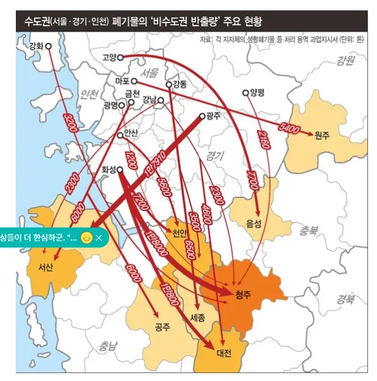

(서울쓰레기를 충청도, 인천, 강원도에 다 갖다 버리며)

(서울쓰레기를 충청도, 인천, 강원도에 다 갖다 버리며)
어 나 유권자야. 너 말하는 뉘앙스가. 니들도 서울 덕 보잖아~~ 딱 이수준인데 당연히 빡치지.
그리고 뭐 서로 균형? 이거 완전 성관계도 서로 좋아서했고 너도 즐겼으니 된거아니냐 논리아니냐?
진심으로 균형과 서로 역할이 각지자체간 자발적으로 이루어졌냐? 지금까지 서울 떼법과 정치적힘으로 찍어눌러서 지방이 강제로 희생당한거지.
어 낰ㅋㅋ 윸ㅋ권ㅋㅋ잨ㅋㅋㅋ 꺼져 병먹금
ㅋㅋㅋㅋㅋ댓글 지랄났노
뭔 헛소리세요?? 국세 ? 간접세요? ㅋㅋㅋ 발전소 서초, 분당, 일산에 지으세요 그럼. 라고 들으면 무슨 생각듬?
ㅋㅋ 니 뭐돼? 서로가 할 수 있는 일을 통해 균형점을 찾는게 맞는거 아닌가? 왜 너 어디사는데 급발진이야 찐따쉑